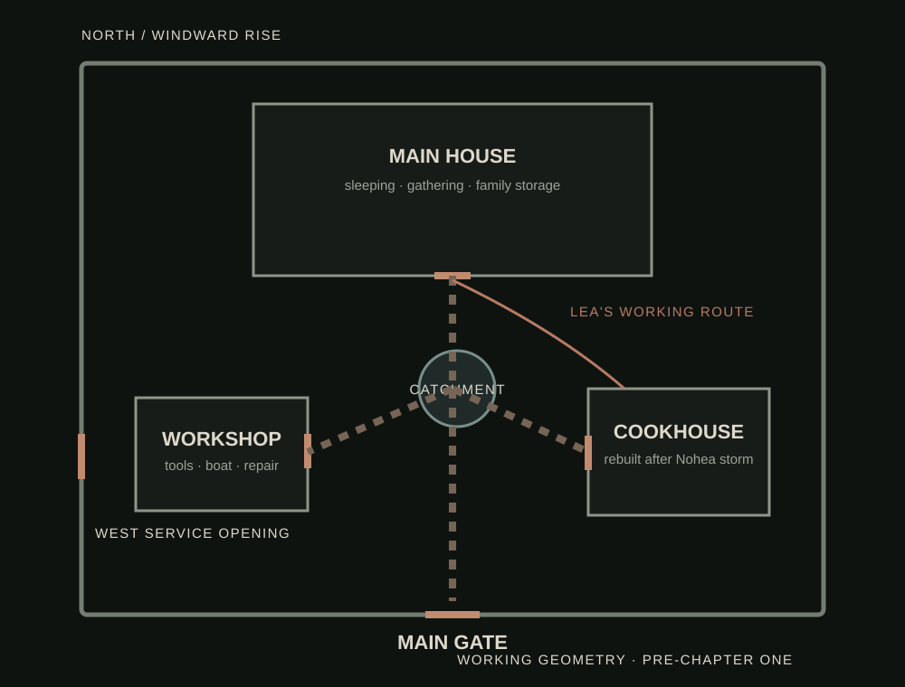

Familiar first.
An object becomes frightening only after the reader knows its ordinary life.
Everything is where it belongs. That is the problem.
Malia Kealoha notices where things belong for a living. After her grandmother dies, she returns to an island family compound to help sort a lifetime of possessions.
At first, the problem is small. A key returns to its hook. A chair faces the old direction. Something thrown away appears in the correct drawer.
Then the house begins remembering arrangements nobody living wants restored.
An object becomes frightening only after the reader knows its ordinary life.
Human hands, family habits, privacy, memory, and access remain plausible longer than is comfortable.
Most checks find exactly what should be there. Routine must remain trustworthy often enough to be violated.
The frightening question is not only who moved something. It is whose version of normal keeps returning.
The main house, cookhouse, and workshop are separate because the place grew around work. Family routine, weather, maintenance, and kuleana decide what belongs where.
By the time something moves, you should already know why that is wrong.

A house can keep a family together long after together becomes the dangerous part.